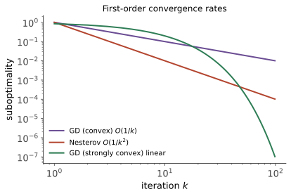

凸优化 II · 一阶方法的收敛性证明
对标：Nesterov Lectures §2 / Bubeck Convex Optimization §3 ｜ 前置：本科优化 II、cvx-01 本科优化 II 给了收敛速率表；本页逐行兑付证明，并补上两块新版图：Nesterov 加速（\(1/k^2\)——一阶方法的速度极限）与近端梯度（把 L1 等不可微正则项收编进梯度法）。证明模板只有一个：找对势函数。
1. 梯度下降：两条速率的完整证明

引理（下降引理）【证明】 \(L\)-光滑（\(\nabla f\) Lipschitz）⇒ \(f(y) \leq f(x) + \langle\nabla f(x), y - x\rangle + \frac L2\|y - x\|^2\)（对 \(g(t) = f(x + t(y-x))\) 微积分基本定理 + Lipschitz 估计积分）。取 \(y = x - \frac1L\nabla f\)：每步至少降 \(\frac{1}{2L}\|\nabla f\|^2\)。
定理（凸 + \(L\)-光滑，\(\alpha = 1/L\)） \(f(x_k) - f^* \leq \dfrac{L\|x_0 - x^*\|^2}{2k}\)。 【证明】 势函数 \(\Phi_k = \|x_k - x^*\|^2\)：
整理（凸性一阶条件 \(\langle\nabla f_k, x_k - x^*\rangle \geq f_k - f^*\) + 下降引理）得 \(\frac2L(f_k - f^*) \leq \Phi_k - \Phi_{k+1}\)；望远镜求和 + \(f_k\) 单调降：\(k\) 步后 \(f_k - f^* \leq \frac{L\Phi_0}{2k}\)。\(\blacksquare\)
定理（+\(\mu\)-强凸） \(\Phi_{k+1} \leq \big(1 - \frac\mu L\big)\Phi_k\)——线性收敛。 【证明】 同一展开，凸性条件换强凸版 \(\langle\nabla f_k, x_k - x^*\rangle \geq f_k - f^* + \frac\mu2\Phi_k\)，配合下降引理消去函数值项。\(\blacksquare\)（本科优化 II 那张表的两行至此有据可查；condition number \(\kappa = L/\mu\) 的统治力在证明里显形。）
2. Nesterov 加速：\(1/k^2\) 与下界
算法（加速梯度，动量形式）：
定理（Nesterov 1983） 凸 + \(L\)-光滑：\(f(x_k) - f^* \leq \dfrac{2L\|x_0 - x^*\|^2}{(k+1)^2}\)。 【骨架】 估计序列/双势函数法：构造 \(\Phi_k = A_k(f(x_k) - f^*) + \frac L2\|z_k - x^*\|^2\)（\(z_k\) 为辅助点、\(A_k \sim k^2\)），逐步验证 \(\Phi_{k+1} \leq \Phi_k\)——动量系数 \(\frac{k-1}{k+2}\) 恰好是让两项交换律成立的唯一选择（"魔法系数"是代数配平的产物，非玄学）。\(\blacksquare\)
定理（一阶方法下界，Nesterov）【骨架】 存在 \(L\)-光滑凸函数（"最坏的链条函数"：\(f = \frac L4\big[\frac12 x_1^2 + \frac12\sum(x_{i+1} - x_i)^2 - x_1\big]\) 型），使任何只用梯度信息的方法 \(k\) 步后 \(f - f^* \geq \frac{cL\|x_0 - x^*\|^2}{(k+1)^2}\)。 机理：该函数的梯度每步只能"点亮"一个新坐标——信息以每步一维的速度传播，\(k\) 步只能触及前 \(k\) 维，尾巴的能量给出下界。\(\blacksquare\) 合读：加速法达到下界——\(1/k^2\) 是一阶世界的光速；"动量"不是工程 trick 而是最优性的实现（强凸版加速 \(\big(1 - \sqrt{\mu/L}\big)^k\) 同理达界：\(\kappa\) 改进为 \(\sqrt\kappa\)——本科优化 II 预告的兑现）。
3. 近端梯度：收编不可微项
问题形态：\(\min f(x) + h(x)\)——光滑损失 + 不可微但"简单"的正则项（L1、示性函数、核范数）。
近端算子（cvx-01 语言的运算化）：
（对 \(h = \iota_C\) 即投影——投影是 prox 的特例；对 \(h = \lambda\|\cdot\|_1\) 有闭式软阈值 \(\mathrm{sign}(v)\max(|v| - \lambda, 0)\)【一行推导：逐坐标一维问题分段求导】。）
算法（ISTA / 近端梯度）：\(x_{k+1} = \mathrm{prox}_{h/L}\big(x_k - \frac1L\nabla f(x_k)\big)\)——"光滑部分走梯度、简单部分交 prox"。 定理【引用（证明与 §1 平行）】 速率与纯梯度法同：凸 \(1/k\)、强凸线性、可加速为 FISTA 的 \(1/k^2\)【引用 Beck–Teboulle】。
读法：Lasso、稀疏字典、低秩补全的求解器骨架就是这一行迭代；软阈值算子解释了 L1 的稀疏机理（小于阈值的分量被精确置零——本科优化 I 次微分含区间的算法化身）。prox 演算与共轭的关系：Moreau 分解 \(v = \mathrm{prox}_h(v) + \mathrm{prox}_{h^*}(v)\)——cvx-01 的变换表直接变成算子库【引用】。
4. 练习与要点
例 1（证明的迁移测试） 把 §1 凸情形证明改写为投影梯度法版本（约束凸集 \(C\)）：唯一改动 = 投影非扩张性 \(\|\Pi_C(x) - x^*\| \leq \|x - x^*\|\)（泛函 II）插入势函数链——能独立完成此改写，势函数法即入手。
例 2（软阈值亲算） \(\min \frac12(x - 3)^2 + |x|\)：prox 一步 \(x^* = \mathrm{sign}(3)\max(3 - 1, 0) = 2\)；改 \(|x|\) 系数为 4：\(x^* = 0\)——正则强到一定程度解精确归零，稀疏性的最小实例。
例 3（加速的震荡副作用） 加速法的 \(f(x_k)\) 非单调（动量冲过头再拉回——阻尼振荡，ode-02 欠阻尼的既视感；严格对应：加速法的连续极限是二阶 ODE \(\ddot x + \frac3t\dot x + \nabla f = 0\)【引用 Su–Boyd–Candès】）——训练曲线"加速方法有波纹"不是 bug 而是速度的代价。\(\blacksquare\)
下一页：把"拆分"做成方法论——增广拉格朗日与 ADMM：大规模与分布式优化的主力发动机。